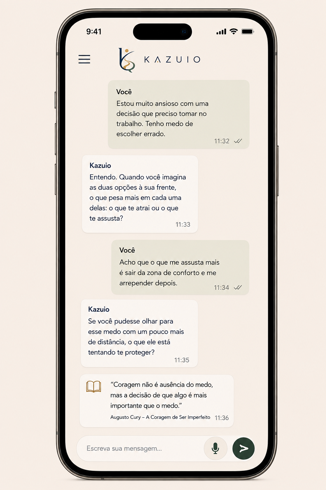

◯
Converse livremente
Fale sobre o que está vivendo, sem julgamentos.
Kazuio é um espaço de reflexão com inteligência artificial que conversa com você para compreender o que está vivendo e enxergar novas perspectivas.
Fale sobre o que está vivendo, sem julgamentos.
Kazuio faz perguntas que ajudam você a pensar melhor.
Quando fizer sentido, Kazuio traz citações reais e verificáveis.
Cada conversa é única. Kazuio caminha ao seu lado.

Compreenda emoções, comportamentos e padrões.
Encontre sentido, esperança e direção na espiritualidade.
Questione ideias e amplie sua visão de mundo.
Quando uma reflexão pede uma referência, Kazuio pode trazer uma passagem de um livro, filósofo ou tradição religiosa.
“O que importa não é ter respostas para tudo, mas aprender a fazer melhores perguntas diante da vida.”
MÁRIO SÉRGIO CORTELLA
“Não sei o que fazer.”
“Só precisava falar com alguém.”
“Estou repetindo o mesmo padrão e não entendo por quê.”
“Preciso tomar uma decisão.”
“Estou bem... mas alguma coisa não está.”
“Já conversei com todo mundo e continuo confuso.”
Não importa exatamente como você chegou. Pode começar pela primeira coisa que vier à cabeça.
Um espaço para pensar.
Um lugar seguro para você colocar o que está vivendo em palavras e enxergar com mais clareza.